Scenografia e allestimenti
Progettazione e costruzione di spazi scenici e allestimenti, dai moodboard fino alla realizzazione, sia come capo reparto che come assistente.
Scenografa e costumista
Lavoro tra reparto creativo, grafica, allestimenti e set. Trasformo oggetti, materiali di riciclo e riferimenti narrativi in spazi scenici capaci di sostenere storie, personaggi e atmosfere.
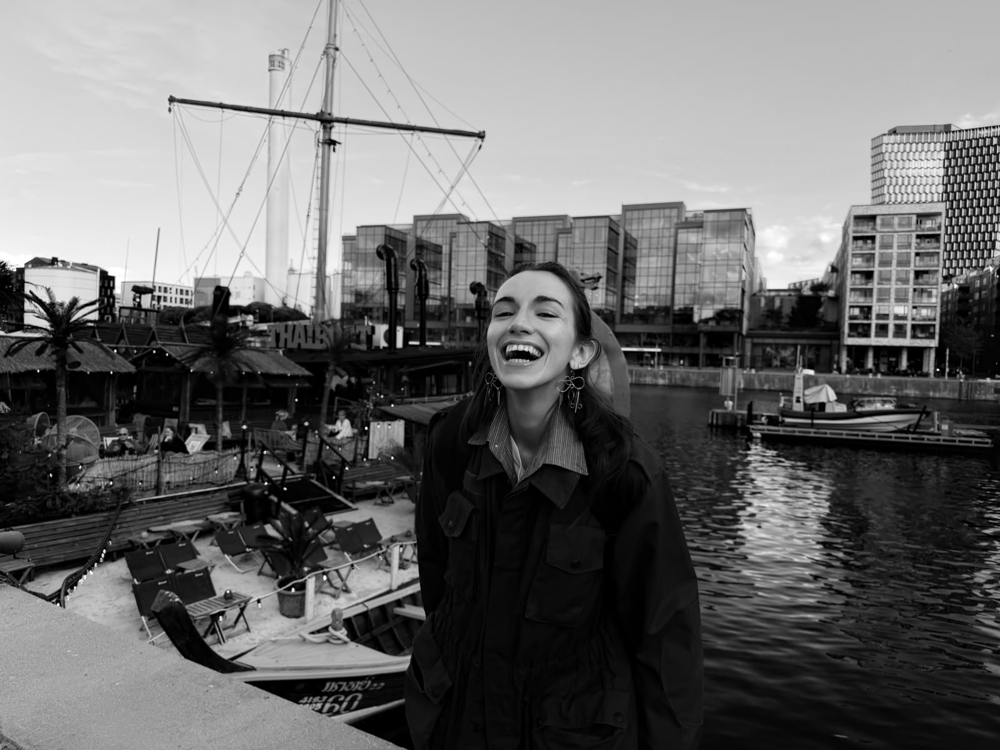
Il mio lavoro nasce dall’incontro tra il disegno, le storie e il gioco scenico. Ogni oggetto può prendere nuova vita e raccontare ancora, può trasformarsi e ricominciare ad esprimere. Che si tratti di recuperare materiali poveri e quotidiani o di props più ricercati, di trovare oggetti o di crearli da zero, ogni elemento scenografico diventa un compagno di lavoro e uno strumento per ampliare lo spazio in cui viene inserito.
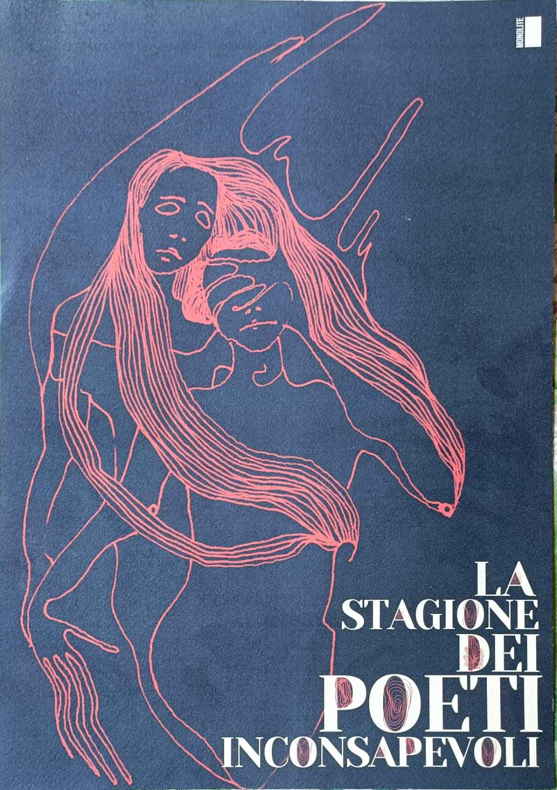
Progettazione e costruzione di spazi scenici e allestimenti, dai moodboard fino alla realizzazione, sia come capo reparto che come assistente.
Gestione dei props e delle dinamiche di lavoro, sia sul palco che sul set.
Styling e sarta di scena.
Ricerca, acquisto e noleggio di props.
Traduzione di testi, concetti e idee in disegni, specialmente utilizzando la tecnica dell’acquarello.
Esperienze
Cinema
Ha collaborato come aiuto scenografa sul set di Magari un'altra volta, il nuovo film di Aldo, Giovanni e Giacomo.
Formazione
Laurea alla Nuova Accademia di Belle Arti di Milano, 2022.
Teatro
Collaborazioni come attrezzista e pittrice di scena.
Teatro
Membro fondatore dell’associazione, collabora come art director, scenografa, costumista, illustratrice e attrice interprete.
Teatro
Sarta di scena e attrezzista per Giacomo Poretti e Daniela Cristofori, 2024, 2025, 2026.
Cinema
Scenografia del cortometraggio realizzato nel 2023.
Set
Scenografa realizzatrice per opera, prosa, televisione, vetrine, eventi e concerti, 2023, 2024, 2025.
Ricerca visiva
Personaggi
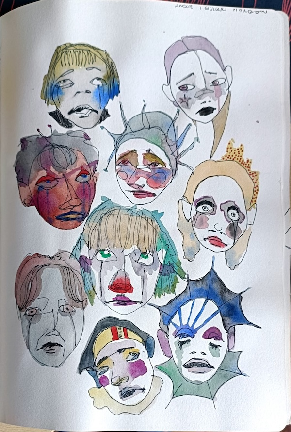
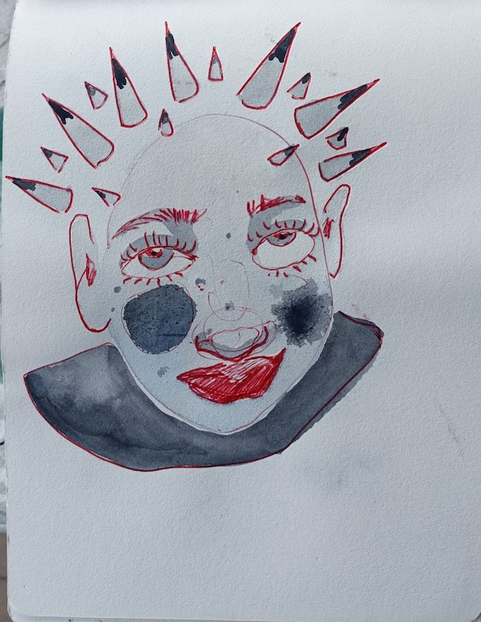
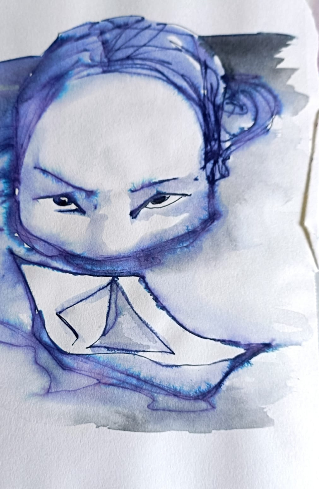
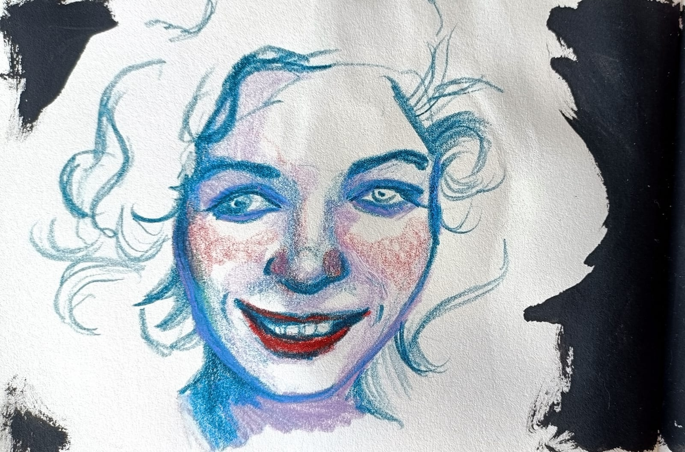
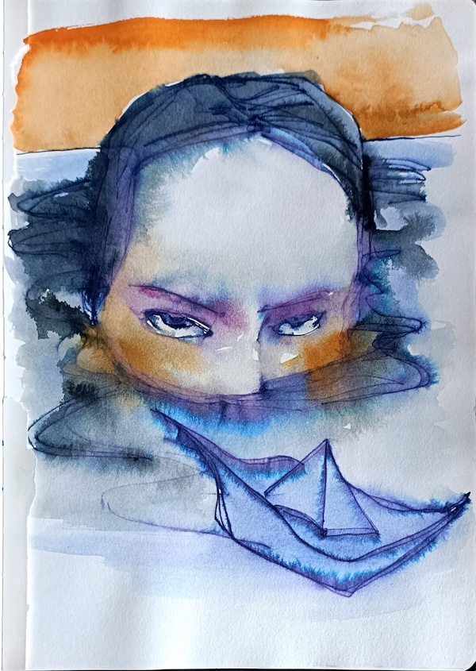
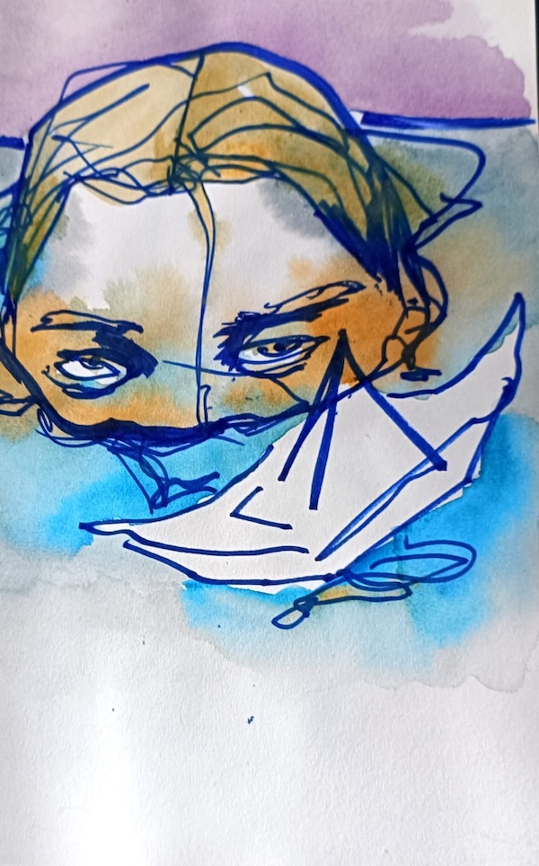
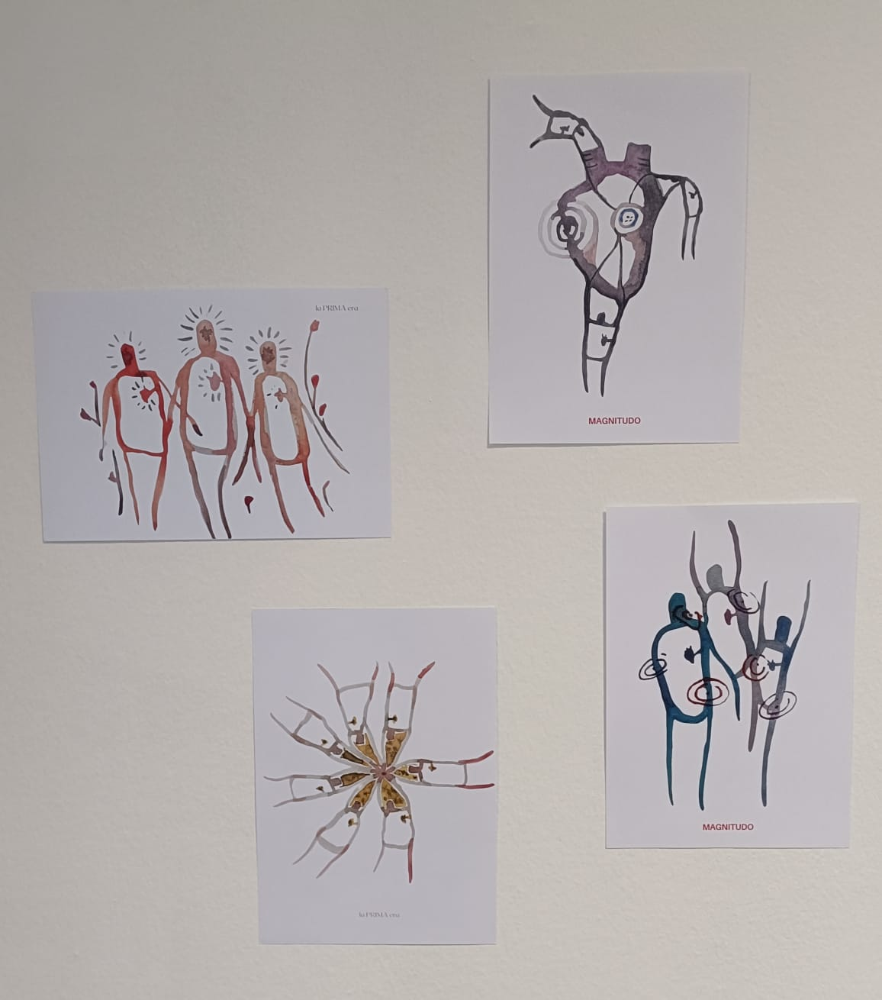
Immaginari
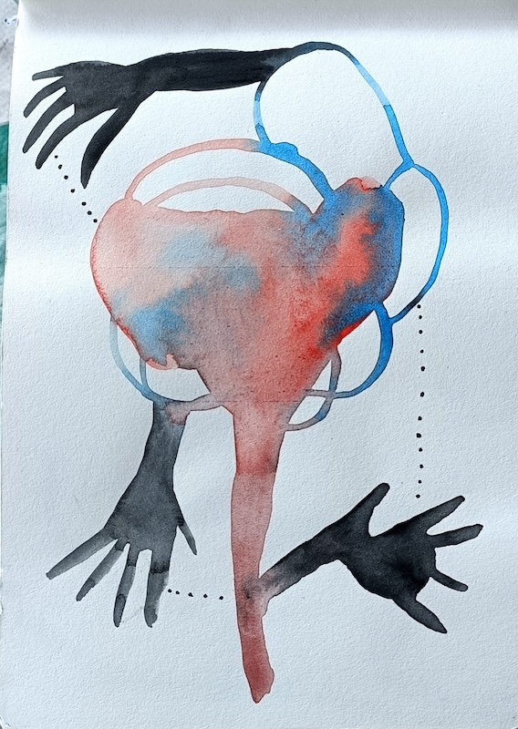
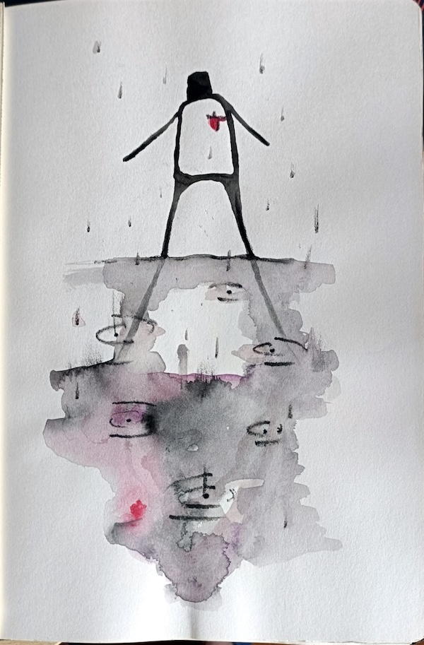
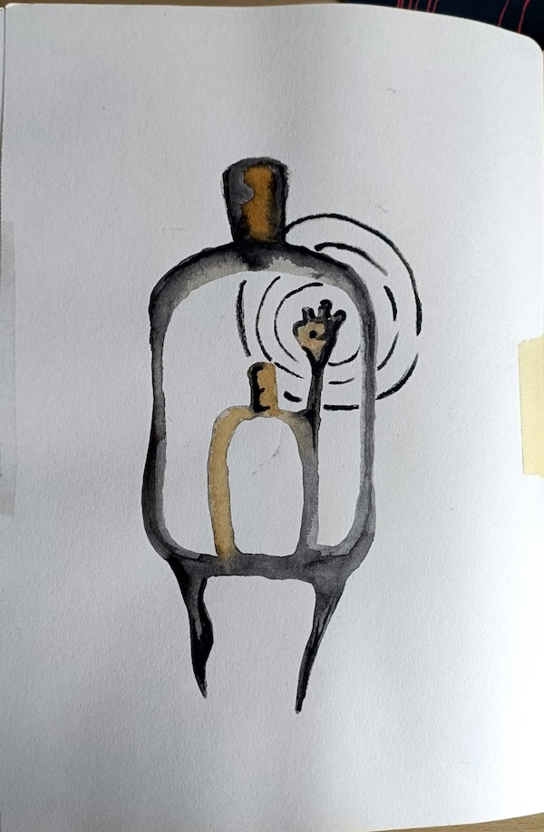
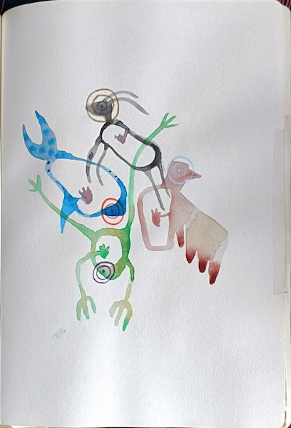
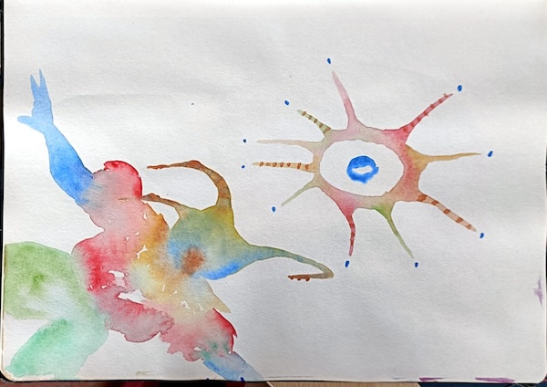
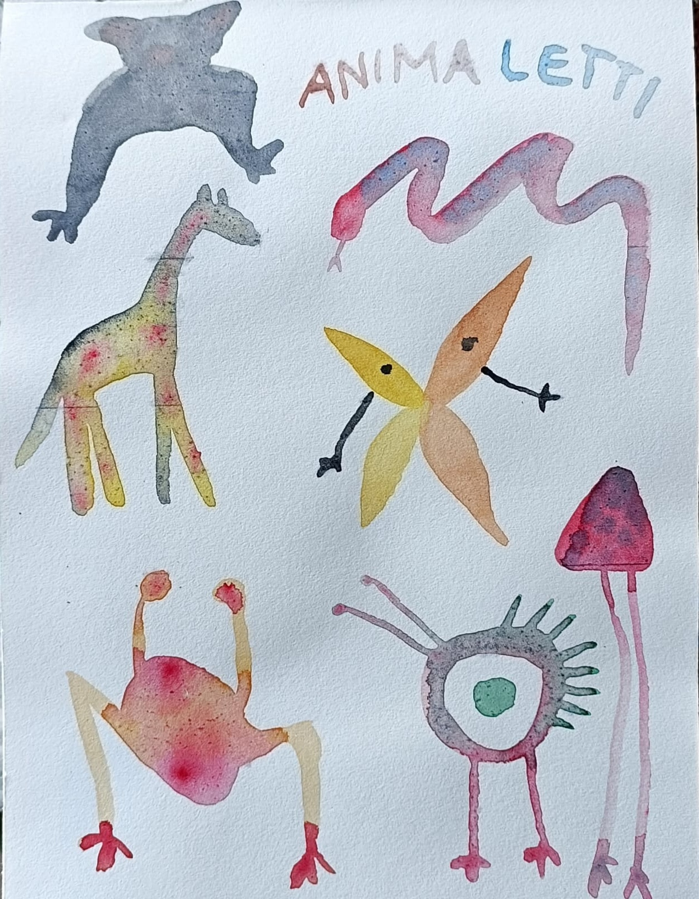
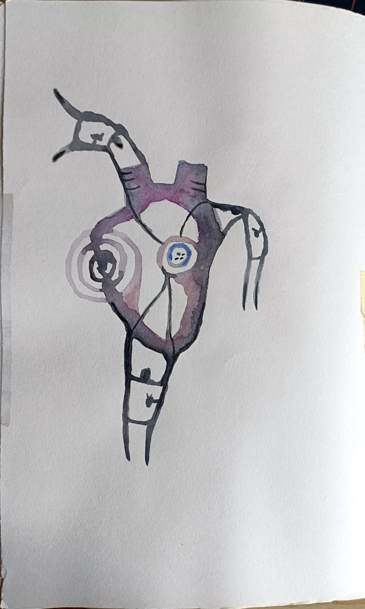
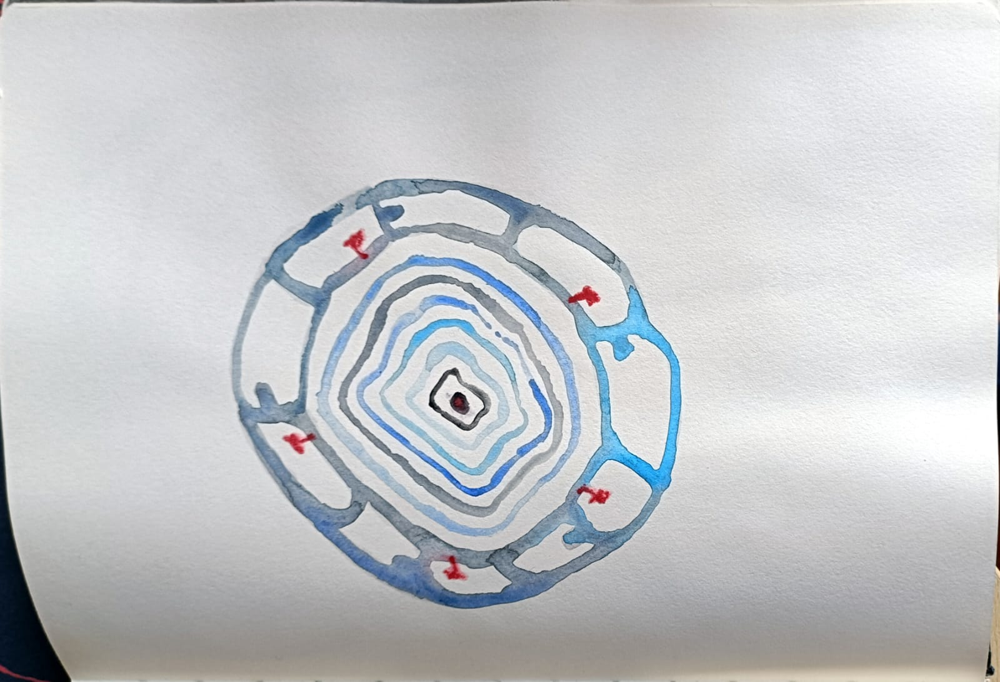
Metodo
Hai una produzione in partenza?
Teatro, cortometraggi, pubblicita', eventi, allestimenti e progetti culturali funzionano meglio quando scenografia e costume entrano presto nel processo creativo.
Contatti
Il form invia una email diretta tramite server. Prima di pubblicare
il sito, configura in contact.php casella SMTP,
password e destinatario reali.
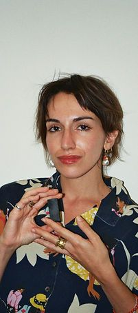